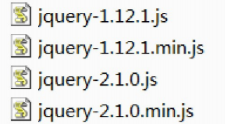
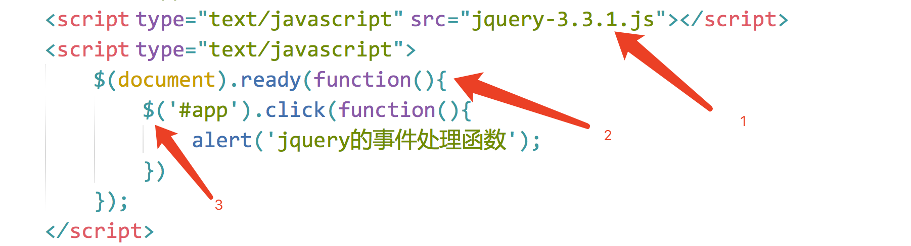
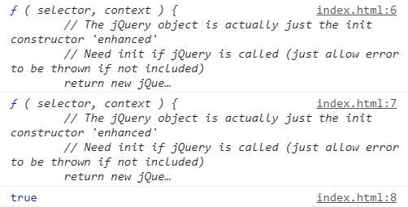
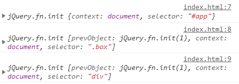

在用js写代码时，会遇到一些问题：
window.onload 事件有事件覆盖的问题，因此只能写一个事件。
代码容错性差。
浏览器兼容性问题。
书写很繁琐，代码量多。
代码很乱，各个页面到处都是。
动画效果很难实现。
jQuery的出现，可以解决以上问题。
jQuery是一个JavaScript框架。它兼容CSS3，还兼容各种浏览器。文档说明很全，应用详细，成熟插件多。

jQuery2.0及后续版本不再支持IE6/7/8浏览器
核心概念是write less，do more(写的更少，做的更多)。
关于jQuery的相关资料：
官网API文档：http://api.jquery.com/
汉化API文档：http://www.css88.com/jqapi-1.9/
用原生js来实现下面代码效果：
<!DOCTYPE html>
<html lang="en">
<head>
<meta charset="UTF-8">
<title></title>
<style type="text/css">
div{
width: 100px;
height: 100px;
background-color: green;
margin-top: 20px;
display: none;
}
</style>
<script type="text/javascript">
window.onload = function(){
var oBtn = document.getElementsByTagName('button')[0];
var divArr = document.getElementsByTagName('div');
oBtn.onclick = function () {
for (var i = 0; i < divArr.length; i++) {
divArr[i].style.display = "block";
divArr[i].innerHTML = "赵云";
}
}
}
</script>
</head>
<body>
<button>操作</button>
<div></div>
<div></div>
<div></div>
</body>
</html>如果用 jQuery 来写，保持其他的代码不变，<script>部分的代码修改为：（需要提前引入 ）
<!DOCTYPE html>
<html lang="en">
<head>
<meta charset="UTF-8">
<title></title>
<style type="text/css">
div{
width: 100px;
height: 100px;
background-color: green;
margin-top: 20px;
display: none;
}
</style>
</head>
<body>
<button>操作</button>
<div></div>
<div></div>
<div></div>
<script type="text/javascript" src="jquery-3.3.1.js"></script> //引入jQuery
<script type="text/javascript">
$(document).ready(function(){
// 获取dom元素
var oBtn = $('button'); //根据标签名获取元素
var oDiv = $('div'); //根据标签名获取元素
oBtn.click(function(){
oDiv.show(1000);//显示盒子
oDiv.html('赵云'); // 设置内容
});//事件是通过方法绑定的
})
</script>
</body>
</html>链式编程：比如.show()和.html()可以连写成.show().html()。
隐式迭代：隐式 对应的是 显式。隐式迭代的意思是：在方法的内部进行循环遍历，而不用我们自己再进行循环，简化我们的操作，方便我们调用。
（1）引包
（2）入口函数
（3）功能实现代码（事件处理）
如图：

主要：导包的代码一定要放在js代码的最上面。
jQuery 有两个大版本：
1.x版本：最新版为 v1.11.3。
2.x版本：最新版为 v2.1.4（不再支持IE6、7、8）。
3.x版本。最新版为 v3.4.1
我使用的是老版本 v2.1.0，你们下载的是最新版本，下载jQuery包之后里面会有两个文件，一个是jquery-3.4.1.js，一个是jquery-3.4.1.min.js
它们的区别是：
第一个是未压缩版，第二个是压缩版。
平时开发过程中，可以使用任意一个版本；但是，项目上线的时候，推荐使用压缩版。
原生 js 的入口函数指的是：window.onload = function() {}; 如下：
//原生 js 的入口函数。页面上所有内容加载完毕，才执行。
//不仅要等文本加载完毕，而且要等图片也要加载完毕，才执行函数。
window.onload = function () {
alert(1);
}而 jQuery的入口函数，有以下几种写法：
写法1：
//1.文档加载完毕，图片不加载的时候，就可以执行这个函数。
$(document).ready(function () {
alert(1);
})写法2：
//2.文档加载完毕，图片不加载的时候，就可以执行这个函数。
$(function () {
alert(1);
});写法3：
//3.文档加载完毕，图片也加载完毕的时候，在执行这个函数。
$(window).ready(function () {
alert(1);
})jQuery入口函数与js入口函数的区别：
区别一：书写个数不同：
Js 的入口函数只能出现一次，出现多次会存在事件覆盖的问题。
jQuery 的入口函数，可以出现任意多次，并不存在事件覆盖问题。
区别二：执行时机不同：
Js的入口函数是在所有的文件资源加载完成后，才执行。这些文件资源包括：页面文档、外部的js文件、外部的css文件、图片等。
jQuery的入口函数，是在文档加载完成后，就执行。文档加载完成指的是：DOM树加载完成后，就可以操作DOM了，不用等到所有的外部资源都加载完成。
文档加载的顺序：从上往下，边解析边执行。
jQuery 使用 $ 符号原因：书写简洁、相对于其他字符与众不同、容易被记住。
jQuery占用了我们两个变量：$ 和 jQuery。当我们在代码中打印它们俩的时候：
<script src="jquery-2.1.0.js"></script>
<script>
console.log($);
console.log(jQuery);
console.log($===jQuery);
</script>打印结果：

从打印结果可以看出，$ 代表的就是 jQuery。
那怎么理解jQuery里面的 $ 符号呢？
$ 实际上表示的是一个函数名 如下：
$(); // 调用上面我们自定义的函数$
$(document）.ready(function(){}); // 调用入口函数
$(function(){}); // 调用入口函数
$(“#btnShow”) // 获取id属性为btnShow的元素
$(“div”) // 获取所有的div标签元素如上方所示，jQuery 里面的 $ 函数，根据传入参数的不同，进行不同的调用，实现不同的功能。返回的是jQuery对象。
jQuery这个js库，除了$ 之外，还提供了另外一个函数：jQuery。jQuery函数跟 $ 函数的关系：jQuery === $。
通过 jQuery 获取的元素是一个数组，数组中包含着原生JS中的DOM对象。举例：
针对下面这样一个div结构：
<div></div>
<div id="app"></div>
<div class="box"></div>
<div class="box"></div>
<div></div>通过原生 js 获取这些元素节点的方式是：
var myBox = document.getElementById("app"); //通过 id 获取单个元素
var boxArr = document.getElementsByClassName("box"); //通过 class 获取的是伪数组
var divArr = document.getElementsByTagName("div"); //通过标签获取的是伪数组通过 jQuery 获取这些元素节点的方式是：（获取的都是数组）
//获取的是数组，里面包含着原生 JS 中的DOM对象。
console.log($('#app'));
console.log($('.box'));
console.log($('div'));
设置当前4个div的样式：
$('div').css({
'width': '200px',
'height': '200px',
"background-color":'red',
'margin-top':'20px'
})由于JQuery 自带了 css()方法，我们还可以直接在代码中给 div 设置 css 属性。
总结：jQuery 就是把 DOM 对象重新包装了一下，让其具有了 jQuery 方法。
1. DOM 对象 转为 jQuery对象
$(js对象);2.jQuery对象 转为 DOM 对象
jquery对象[index]; //方式1（推荐）
jquery对象.get(index); //方式2jQuery对象转换成了 DOM 对象之后，可以直接调用 DOM 提供的一些功能。如：
$('div')[1].style.backgroundColor = 'yellow';
$('div')[3].style.backgroundColor = 'green';总结：如果想要用哪种方式设置属性或方法，必须转换成该类型。